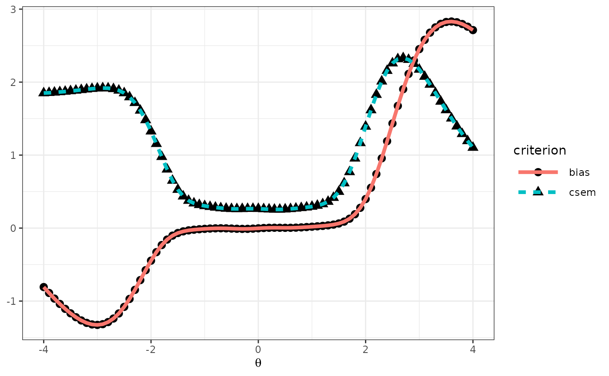

This function evaluates the measurement precision and bias in Multistage-Adaptive Test (MST) panels using a recursion-based evaluation method introduced by Lim et al. (2021). This function computes conditional biases and standard errors of measurement (CSEMs) across a range of IRT ability levels, facilitating efficient and accurate MST panel assessments without extensive simulations.
Arguments
- x
A data frame containing the item metadata of the item bank (e.g., item parameters, number of categories, and IRT models). Each row is one item, and the rows correspond to the rows of
module. Seeshape_df()for creating item metadata.- D
A scaling constant used in IRT models to make the logistic function closely approximate the normal ogive function. A value of 1.702 is commonly used for this purpose. Default is 1.
- route_map
A binary square matrix defining the MST structure. A value of 1 at row i and column j means that test takers can be routed from module i to module j. This is the same convention as the
transMatrixargument ofrandomMST()in the mstR package (Magis et al., 2017). The stages are found from the transitions (seepanel_info()), and the first stage must contain a single routing module.- module
A binary matrix that assigns the items in
xto modules. It has one row per item (in the order ofx) and one column per module, and a value of 1 at row j and column m means that item j belongs to module m. This is the same convention as themodulesargument ofrandomMST()in the mstR package (Magis et al., 2017).- cut_score
A list with one numeric vector per stage transition (the number of stages minus one). Element s holds the cut scores on the ability (theta) metric for routing from stage s to stage s + 1, finite and in strictly ascending order, with one fewer value than the number of modules in stage s + 1; cut score k separates the k-th and the (k + 1)-th module of that stage in the order of the module indices. A
NULLelement is read as an empty vector for a stage with a single module. For example, in a 1-3-3 panel,cut_score = list(c(-0.5, 0.5), c(-0.6, 0.6)). See Details.- theta
A vector of ability levels (theta) at which the MST panel's performance is assessed. This allows for the evaluation of measurement precision and bias across a continuum of ability levels. The default is
theta = seq(-5, 5, 1).- intpol
Logical. If
TRUE, inverse TCC scoring assigns ability estimates to the sum scores that cannot be mapped through the TCC (sum scores less than or equal to the sum of the guessing parameters, and the maximum possible sum score), as inest_score(). The low scores are mapped by linear interpolation (Lim et al., 2021), and the maximum sum score receives the second value ofrange.tcc. Withintpol = FALSE, some sum scores have no ability estimate, and the function stops with an error. Default isTRUE.- range.tcc
A numeric vector of length two giving the ability estimates assigned to the lowest and the maximum possible sum scores when
intpol = TRUE(seeest_score()). The range must be wide enough to cover the ability estimates of the sum scores, or the function stops with an error. Default isc(-7, 7).- tol
A positive number giving the tolerance of the bisection search used by inverse TCC scoring; the search stops when the search interval is no wider than
tol. Default is 1e-4.
Value
A list with the following seven elements:
- panel.info
The output of
panel_info():config,pathway,n.module, andn.stage.- item.by.mod
A list of item metadata data frames, one per module, named
m.1,m.2, etc. The item metadata are checked and completed as inrun_mst(), so these are plain data frames with upper-case model names and without parameter columns that are allNA, whatever the class ofx. The same holds foritem.by.path.- item.by.path
A list with one element per stage (
stage.1,stage.2, ...). Each element is a list of item metadata data frames, one per distinct partial pathway up to that stage (path.1,path.2, ...), holding the items of all modules on the partial pathway.- eq.theta
A list with one element per stage. Each element is a matrix with one row per possible cumulative sum score (0 to the maximum) and one column per partial pathway up to that stage (
path.1,path.2, ...), holding the inverse TCC ability estimates. The columns of the last stage correspond to the complete pathways.- cdist.by.mod
A list with one element per value of
theta(named by the values). Each element is a matrix with one row per sum score and one column per module (m.1,m.2, ...), holding the conditional sum score distribution of each module; rows beyond a module's maximum score are 0.- jdist.by.path
A list with one element per stage. Each element is a list with one element per value of
theta, holding a matrix with one row per cumulative sum score and one column per partial pathway, which gives the joint probability of the sum score and the pathway.- eval.tb
A data frame with the columns
theta(true ability),muandsigma2(conditional mean and variance of the final ability estimate),bias(mu - theta), andcsem(square root ofsigma2).
Details
The reval_mst() function evaluates an MST panel by
implementing a recursion-based method to assess measurement precision
across IRT ability levels. This approach, detailed in Lim et al. (2021),
enables the computation of conditional biases and CSEMs efficiently,
bypassing the need for extensive simulations traditionally required for MST
evaluation.
The recursion of Lim et al. (2021) is built on inverse TCC ability
estimates. At each stage, the sum score accumulated over all modules
administered so far is converted to an ability estimate by inverse TCC
scoring, this estimate is compared with the cut scores to route the test
taker to the next module, and the final ability estimate is also the
inverse TCC estimate of the total sum score. Accordingly, the function
supports inverse TCC scoring with cut-score routing only. To evaluate
other scoring or routing methods, use run_mst(), which runs a
Monte Carlo simulation. With route_method = NULL, a cut_score list, and
route_score = list(method = "INV.TCC"), run_mst() follows the
same design that this function evaluates analytically.
The first stage must have a single routing module, whatever its module
index, and the function stops with an error when stage 1 has more than one
module. run_mst() also runs panels with several stage-1 modules, so
the two functions differ in the panels they support.
All modules in the same stage must have the same maximum sum score (the sum of the maximum item scores), for example the same number of items when all items are dichotomous. The function stops with an error when this condition is not met.
The module argument, used in conjunction with the item bank metadata x,
systematically organizes items into modules for MST panel evaluation. Each
row of x corresponds to an item, detailing its characteristics like score
categories and IRT model. The module matrix, structured with the same
number of rows as x and columns representing modules, indicates item
assignments with 1s. This precise mapping enables the reval_mst()
function to evaluate the MST panel's performance by analyzing how items
within each module contribute to measurement precision and bias, reflecting
the tailored progression logic inherent in MST designs.
The route_map argument defines the possible transitions between
modules, following the transMatrix argument of randomMST() in the
mstR package (Magis et al., 2017). A value of 1 at row i and column
j means that test takers can move from module i directly to module j.
panel_info() uses this matrix to enumerate all pathways, and
reval_mst() evaluates the routing along these pathways
analytically, without simulation.
To further detail the cut_score argument with an illustration: In a 1-3-3
MST configuration, the list cut_score = list(c(-0.5, 0.5), c(-0.6, 0.6))
operates as a decision guide at each stage. Initially, all test takers
start in the routing module. Upon completion, the inverse TCC ability
estimate of the sum score over all modules taken so far determines the next
module: estimates below -0.5 route to the first module of the next stage,
estimates from -0.5 up to but not including 0.5 to the second, and
estimates of 0.5 or above to the third. When a module can reach only some
modules of the next stage, only the cut scores that separate the reachable
modules are used. For example, a test taker in a stage-2 module that can
reach only the second and third stage-3 modules is routed by the second
cut score alone.
References
Lim, H., Davey, T., & Wells, C. S. (2021). A recursion-based analytical approach to evaluate the performance of MST. Journal of Educational Measurement, 58(2), 154-178. doi:10.1111/jedm.12276 .
Magis, D., Yan, D., & von Davier, A. A. (2017). Computerized adaptive and multistage testing with R: Using packages catR and mstR. Springer. doi:10.1007/978-3-319-69218-0 .
Author
Hwanggyu Lim hglim83@gmail.com
Examples
# \donttest{
## ------------------------------------------------------------------------------
## Evaluation of a 1-3-3 MST panel using simMST data.
## This panel was assembled using module-level target TIFs and design
## constraints similar to those used in Lim et al.'s (2021) simulation study
## (it is not the identical dataset from that study).
## Details:
## (a) Panel configuration: 1-3-3 MST panel
## (b) Test length: 24 items (each module contains 8 items across all stages)
## (c) IRT model: 3-parameter logistic model (3PLM)
## ------------------------------------------------------------------------------
# Load the necessary library
library(dplyr)
library(tidyr)
library(ggplot2)
# Import item bank metadata
x <- simMST$item_bank
# Import module information
module <- simMST$module
# Import routing map
route_map <- simMST$route_map
# Import cut scores for routing to subsequent modules
cut_score <- simMST$cut_score
# Import ability levels (theta) for evaluating measurement precision
theta <- simMST$theta
# Evaluate MST panel using the reval_mst() function
eval <-
reval_mst(x,
D = 1.702, route_map = route_map, module = module,
cut_score = cut_score, theta = theta, range.tcc = c(-7, 7)
)
# Review evaluation results
# The evaluation result table below includes conditional biases and
# standard errors of measurement (CSEMs) across ability levels
print(eval$eval.tb)
#> theta mu sigma2 bias csem
#> 1 -4.0 -4.808121816 3.42224454 -0.808121816 1.8499310
#> 2 -3.9 -4.789018118 3.43809047 -0.889018118 1.8542089
#> 3 -3.8 -4.766227063 3.45633941 -0.966227063 1.8591233
#> 4 -3.7 -4.739003829 3.47720522 -1.039003829 1.8647266
#> 5 -3.6 -4.706457627 3.50082146 -1.106457627 1.8710482
#> 6 -3.5 -4.667529929 3.52716739 -1.167529929 1.8780754
#> 7 -3.4 -4.620974274 3.55595499 -1.220974274 1.8857240
#> 8 -3.3 -4.565341410 3.58646261 -1.265341410 1.8937958
#> 9 -3.2 -4.498975738 3.61729989 -1.298975738 1.9019201
#> 10 -3.1 -4.420032010 3.64609197 -1.320032010 1.9094743
#> 11 -3.0 -4.326524656 3.66908363 -1.326524656 1.9154852
#> 12 -2.9 -4.216425519 3.68069437 -1.316425519 1.9185136
#> 13 -2.8 -4.087827618 3.67311048 -1.287827618 1.9165361
#> 14 -2.7 -3.939190342 3.63608699 -1.239190342 1.9068526
#> 15 -2.6 -3.769671646 3.55723963 -1.169671646 1.8860646
#> 16 -2.5 -3.579531040 3.42319361 -1.079531040 1.8501875
#> 17 -2.4 -3.370550870 3.22192852 -0.970550870 1.7949731
#> 18 -2.3 -3.146374631 2.94638073 -0.846374631 1.7165025
#> 19 -2.2 -2.912612920 2.59873030 -0.712612920 1.6120578
#> 20 -2.1 -2.676548271 2.19389663 -0.576548271 1.4811808
#> 21 -2.0 -2.446322106 1.76007533 -0.446322106 1.3266783
#> 22 -1.9 -2.229645390 1.33450055 -0.329645390 1.1552058
#> 23 -1.8 -2.032321625 0.95460517 -0.232321625 0.9770390
#> 24 -1.7 -1.857088754 0.64771766 -0.157088754 0.8048091
#> 25 -1.6 -1.703286390 0.42419405 -0.103286390 0.6513018
#> 26 -1.5 -1.567529547 0.27740271 -0.067529547 0.5266903
#> 27 -1.4 -1.445069807 0.18987969 -0.045069807 0.4357519
#> 28 -1.3 -1.331207524 0.14154025 -0.031207524 0.3762184
#> 29 -1.2 -1.222225352 0.11571234 -0.022225352 0.3401652
#> 30 -1.1 -1.115711117 0.10132976 -0.015711117 0.3183234
#> 31 -1.0 -1.010467373 0.09223884 -0.010467373 0.3037085
#> 32 -0.9 -0.906250277 0.08548769 -0.006250277 0.2923828
#> 33 -0.8 -0.803427274 0.07989210 -0.003427274 0.2826519
#> 34 -0.7 -0.702526078 0.07520746 -0.002526078 0.2742398
#> 35 -0.6 -0.603713902 0.07166265 -0.003713902 0.2676988
#> 36 -0.5 -0.506419973 0.06957502 -0.006419973 0.2637708
#> 37 -0.4 -0.409361950 0.06900157 -0.009361950 0.2626815
#> 38 -0.3 -0.311031582 0.06954823 -0.011031582 0.2637200
#> 39 -0.2 -0.210392034 0.07043473 -0.010392034 0.2653954
#> 40 -0.1 -0.107394541 0.07079722 -0.007394541 0.2660775
#> 41 0.0 -0.003020654 0.07009583 -0.003020654 0.2647562
#> 42 0.1 0.101195029 0.06841021 0.001195029 0.2615535
#> 43 0.2 0.203935849 0.06642380 0.003935849 0.2577282
#> 44 0.3 0.304760735 0.06507124 0.004760735 0.2550906
#> 45 0.4 0.404268069 0.06505829 0.004268069 0.2550653
#> 46 0.5 0.503674818 0.06655934 0.003674818 0.2579910
#> 47 0.6 0.604113025 0.06926578 0.004113025 0.2631839
#> 48 0.7 0.706116775 0.07271246 0.006116775 0.2696525
#> 49 0.8 0.809566254 0.07664014 0.009566254 0.2768396
#> 50 0.9 0.913989404 0.08119260 0.013989404 0.2849431
#> 51 1.0 1.018936817 0.08697665 0.018936817 0.2949180
#> 52 1.1 1.124237650 0.09523922 0.024237650 0.3086085
#> 53 1.2 1.230138950 0.10846069 0.030138950 0.3293337
#> 54 1.3 1.337437576 0.13152988 0.037437576 0.3626705
#> 55 1.4 1.447691648 0.17341863 0.047691648 0.4164356
#> 56 1.5 1.563507131 0.24891023 0.063507131 0.4989090
#> 57 1.6 1.688793130 0.37944575 0.088793130 0.6159917
#> 58 1.7 1.828800578 0.59172170 0.128800578 0.7692345
#> 59 1.8 1.989742189 0.91275843 0.189742189 0.9553839
#> 60 1.9 2.177883977 1.36127926 0.277883977 1.1667387
#> 61 2.0 2.398208325 1.93741933 0.398208325 1.3919121
#> 62 2.1 2.652995666 2.61499495 0.552995666 1.6170946
#> 63 2.2 2.940808726 3.34098096 0.740808726 1.8278350
#> 64 2.3 3.256275361 4.04428294 0.956275361 2.0110403
#> 65 2.4 3.590775050 4.65138229 1.190775050 2.1567064
#> 66 2.5 3.933796614 5.10289537 1.433796614 2.2589589
#> 67 2.6 4.274529547 5.36492913 1.674529547 2.3162317
#> 68 2.7 4.603255939 5.43215059 1.903255939 2.3306974
#> 69 2.8 4.912272678 5.32338528 2.112272678 2.3072463
#> 70 2.9 5.196279204 5.07302346 2.296279204 2.2523373
#> 71 3.0 5.452320839 4.72181852 2.452320839 2.1729746
#> 72 3.1 5.679446946 4.30951268 2.579446946 2.0759366
#> 73 3.2 5.878241351 3.87022633 2.678241351 1.9672891
#> 74 3.3 6.050342862 3.43043317 2.750342862 1.8521429
#> 75 3.4 6.198025435 3.00881210 2.798025435 1.7345928
#> 76 3.5 6.323867445 2.61718809 2.823867445 1.6177726
#> 77 3.6 6.430512839 2.26193109 2.830512839 1.5039718
#> 78 3.7 6.520512752 1.94540173 2.820512752 1.3947766
#> 79 3.8 6.596230710 1.66722536 2.796230710 1.2912108
#> 80 3.9 6.659794430 1.42531046 2.759794430 1.1938637
#> 81 4.0 6.713079533 1.21660661 2.713079533 1.1029989
# Generate plots for biases and CSEMs
p_eval <-
eval$eval.tb %>%
dplyr::select(theta, bias, csem) %>%
tidyr::pivot_longer(
cols = c(bias, csem),
names_to = "criterion", values_to = "value"
) %>%
ggplot2::ggplot(mapping = ggplot2::aes(x = theta, y = value)) +
ggplot2::geom_point(mapping = ggplot2::aes(shape = criterion), size = 3) +
ggplot2::geom_line(
mapping = ggplot2::aes(
color = criterion,
linetype = criterion
),
linewidth = 1.5
) +
ggplot2::labs(x = expression(theta), y = NULL) +
ggplot2::theme_bw() +
ggplot2::theme(legend.key.width = unit(1.5, "cm"))
print(p_eval)

# }